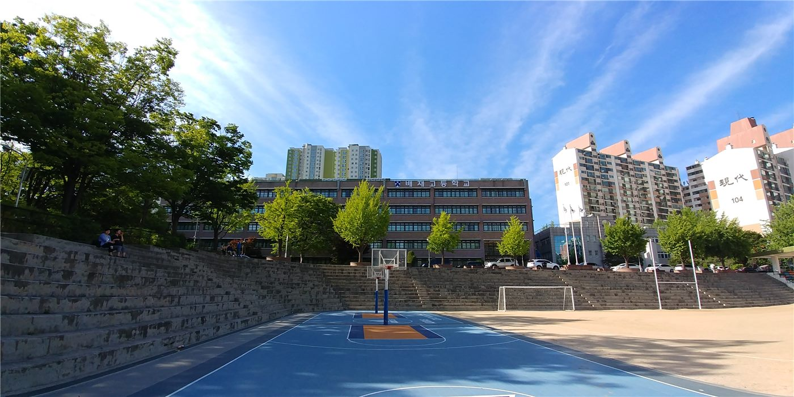

부산화교소학, 가을 소풍 공고… 학기 초 행사 일정 안내
부산화교소학이 가을 소풍 관련 공고를 게시했다. 115학년도 1학기 개학에 이어 진행되는 학기 초 행사로, 학부모 대상 안내가 함께 이뤄졌다.
진태흥 기자 · 2026.09.10
橋화인소식

부산화교소학이 가을 소풍(秋季旅遊) 관련 공고를 게시했다. 115학년도 1학기 개학 이후 진행되는 학기 초 행사다.
광고 문의 · 300×250화교학교의 가을 행사는 학년 초 학생들의 적응을 돕고 학부모와 학교가 교류하는 자리로 자리 잡아 왔다. 인솔 교사 배치와 안전 관리 계획이 함께 공지되는 것이 통례다.
공고에는 일정과 준비물, 참가 여부 회신 방법이 포함되는 것이 일반적이다. 참가비와 보험 처리에 관한 안내도 함께 다뤄진다.
부산화교소학은 부산 지역 화교 사회의 중심 기관 가운데 하나다. 학사 일정과 모집 공고, 교사 초빙 공고가 정기적으로 게시된다.
학부모는 회신 기한을 확인하는 것이 필요하다. 인원 확정이 늦어지면 차량과 장소 예약에 영향을 주기 때문이다.
세부 사항은 학교 공지사항을 통해 확인할 수 있다.
출처·참고 (사실 확인용 — 본문은 직접 재작성)
· http://www.pcps.kr/
· http://www.pcps.kr/